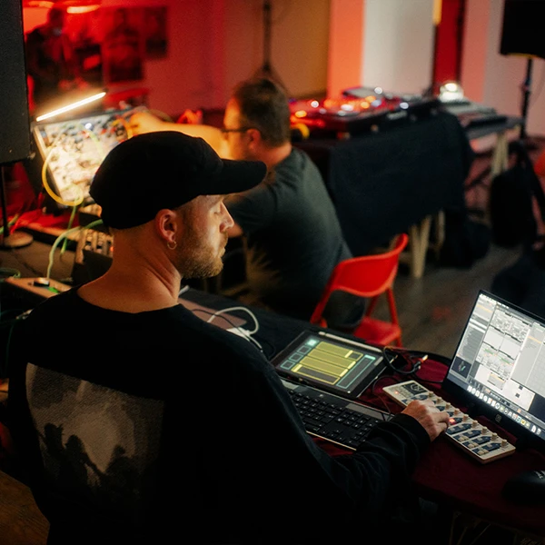

Landscapes Live A/V is an audio-visual live performance by sound artist Insect O. and video
artist highpitchedblack. The performance is an improvisation on modular synthesizers. The
artists are exploring rhythm structures and sound fields to create new landscapes – both in
sound and on video. The A/V show has been performed at DAVE pres. Kulturschaufenster in the city
of Dresden.
Impressions
Landscapes Live AV

Landscapes Live AV
Live At 20 Years Etui Records
Live At 20 Years Etui Records
DAVE Live Jam
DAVE Live Jam
DAVE Live Jam
DAVE Live Jam
Photo Credits
Daniel Madlung, Reinhard Spunkner, Roberto Krebs
Live Dub Techno
Performing live dub techno with synthesizers and modular gear is all
about blending deep, hypnotic rhythms with the spontaneous, hands-on manipulation of sound. The
genre itself thrives on spacious, atmospheric textures, heavy basslines, and subtle, evolving
effects—all of which are perfectly suited to the flexibility and unpredictability of modular
synthesis.